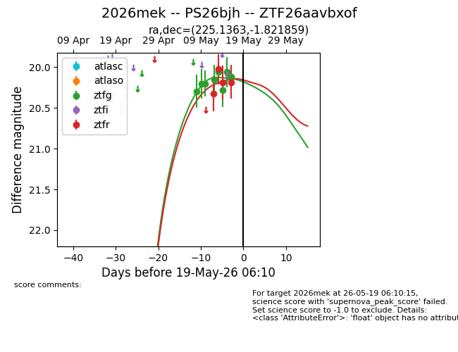
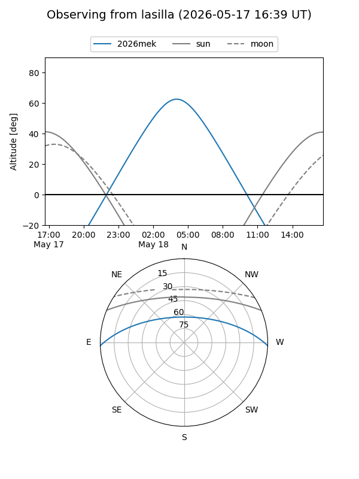
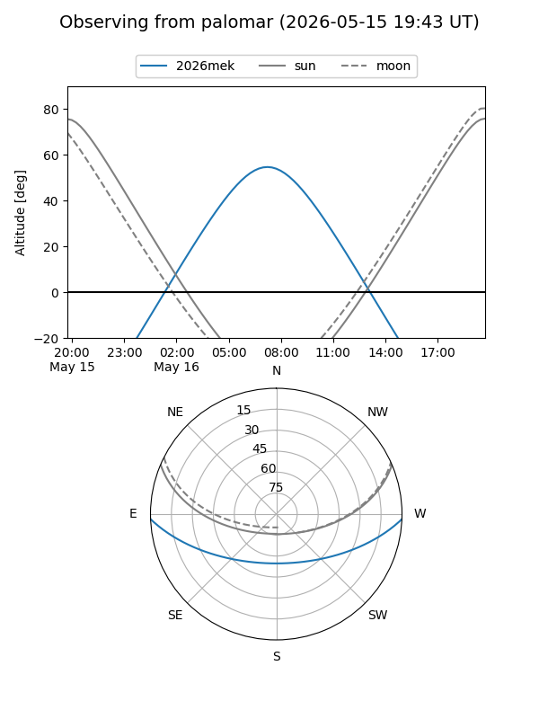
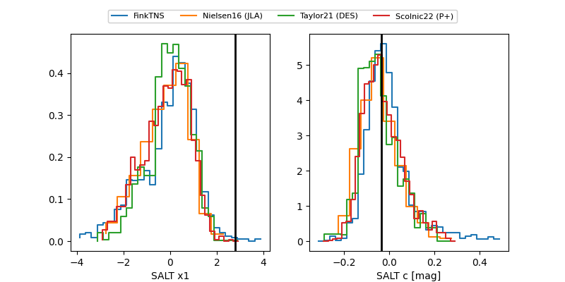

2026mek
Target 2026mek at 2026-05-19 06:12
Aliases and brokers:
FINK: link
Lasair: link
ALeRCE: link
TNS: link
YSE: link
alt names
ZTF26aavbxof (ztf,fink_ztf)
2026mek (tns,yse)
PS26bjh (panstarrs)
Coordinates:
equatorial (ra, dec) = 225.1363,-1.82186
equatorial (HMS+DMS) = 15:00:32.70,-01:49:18.69
galactic (l, b) = (355.1579,+47.52640)
Flags:
Photometry:
last ztfg=20.11, ztfr=20.18
8 ztfg, 4 ztfr detections
Lightcurve

Visibility


Additional plots
